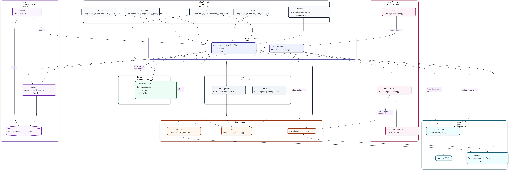

0
Tracked Files
Portfolio Project
مشروع جامعي/احترافي متكامل لبناء AAA Security Platform لشبكات Campus باستخدام RADIUS + Kerberos + SDN Controller Enforcement مع Dashboard تشغيلي حي.
0
Tracked Files
0
Python LOC (src)
0
Switches in Baseline Run
0
Gbps Peak Throughput
System Blueprint

Core Engineering
Combines RADIUS network admission and Kerberos service-level proof for step-up trust.
Controller-level allow/deny flow enforcement with default-deny posture and runtime state checks.
DHCP snooping + ARP inspection against spoofing attempts at access edges.
Multi-page Dash UI for services, sessions, events, metrics, network, proofs, and lockdown.
Rate limiter for brute-force attempts and emergency lockdown mechanisms for containment scenarios.
Structured results in JSON/log artifacts from baseline, radius, and hybrid experiment phases.
Execution Model
Phase 1
Bring up Mininet + OVS + controller connectivity and validate forwarding behavior.
Phase 2
Admission decision tied to identity attributes with enforced role-aware access posture.
Phase 3
Protected services require proof ticket flow before higher privilege actions.
Phase 4
RADIUS + Kerberos with continuous sessions/rate-limit/lockdown controls.
Measured Evidence
Baseline Flow Setup p95
0.345 ms
`data/results/baseline/20251221T182748Z/controller_metrics.json`
Ping Loss
0.0%
Scenario: baseline
Iperf Throughput
35.1 / 35.0 Gbps
Two sample runs captured in metrics output
Controller PacketIn
6,843
Baseline metrics packet_in_count
Technology Stack
This portfolio page is prepared to be the landing page for a public repository. Replace placeholder links with your final public GitHub URLs, then publish.